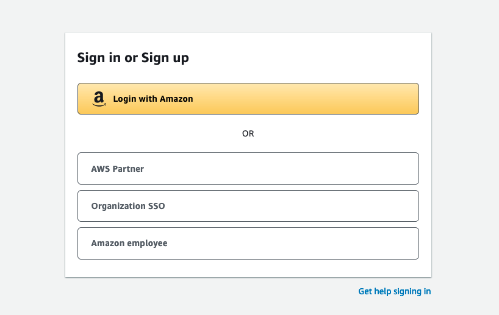
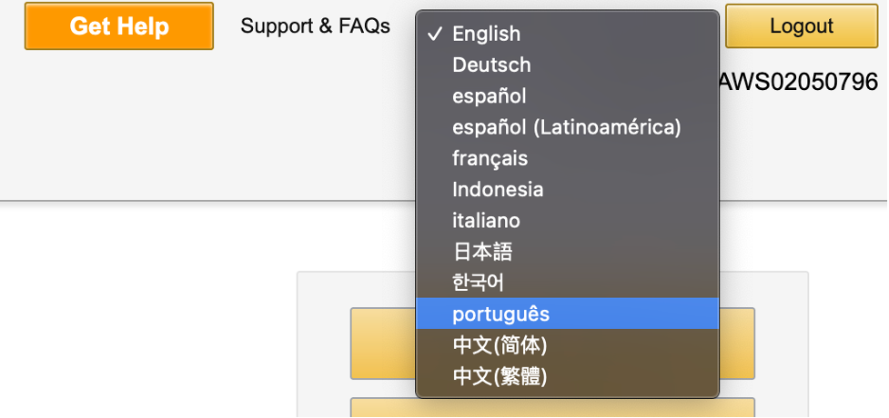
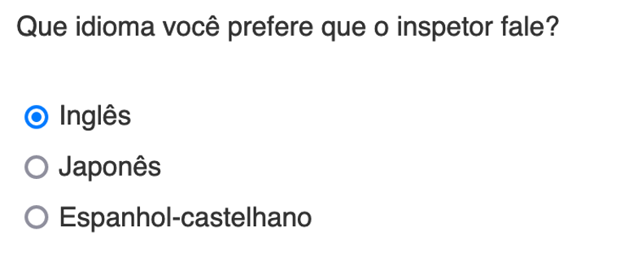
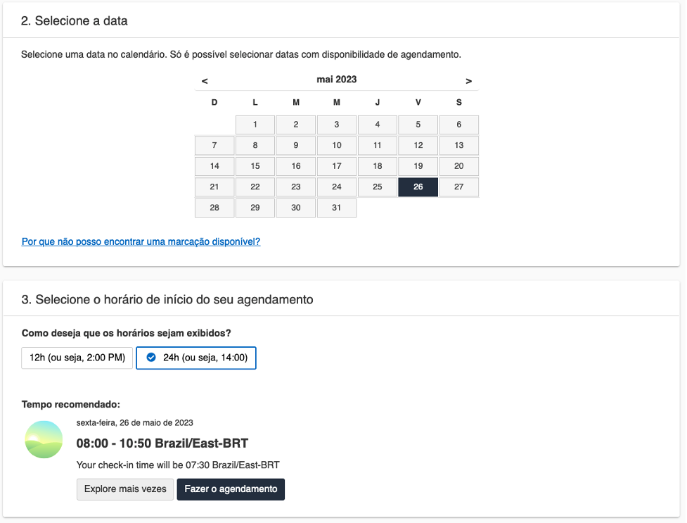
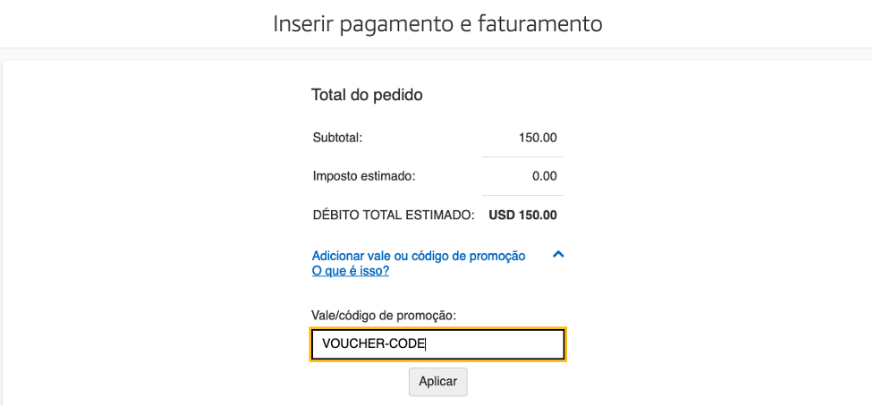

Agendar exame
Como agendar um exame de certificação da Amazon Web Services
-
Ir a AWS Certification
-
Selecione a opção Sign In que está na parte superior direita.
-
Se você trabalha para um parceiro da AWS, selecione a opção AWS Partner e, em seguida, insira suas credenciais.
 -
Na barra superior da página do AWS Training selecione Certification
-
Selecione GO TO YOUR ACCOUNT

-
No canto superior direito, você encontrará a opção de alterar o idioma, se desejar.
 -
Selecione Inscrever-se para um exame
-
Você encontrará todos os exames disponíveis, incluindo o exame AWS Certified Cloud Practitioner bem como a opção de selecionar um dos dois provedores disponíveis, Pearson VUE ou PSI. Ao selecionar uma das duas opções, você será redirecionado para o site do provedor que escolheu. (As etapas e capturas de tela a seguir são do provedor Pearson VUE, você pode selecionar PSI como seu provedor e o menu pode variar um pouco).
-
Cada provedor tem opções para fazer o exame presencial ou virtualmente, selecione a opção que mais lhe convier.
-
Você deve selecionar o idioma em que deseja realizar seu exame, o AWS Certified Cloud Practitioner está disponível para ser realizado em português.
-
Aceite os termos e condições.
-
Caso opte por realizar o exame de forma remota, ambos os provedores têm opções para selecionar o idioma do inspetor (ou proctor) que o acompanhará durante o exame remotamente. Não há opção de Português para o proctor.
 -
Selecione o fuso horário em que você está.
-
Selecione a data para fazer o exame e, em seguida, os horários disponíveis para esse dia serão ativados no painel inferior.
 -
Uma vez selecionado o horário e clique em Avançar, será apresentado o resumo do custo do exame para gerar o pagamento. Se você tiver um voucher, a opção de adicionar o código para resgate será habilitada na próxima etapa.
No caso de possuir um voucher promocional, deve certificar-se de que selecionou o fornecedor de exames correspondente ao referido voucher.
-
Selecionar Proceder para finalizar.
-
Insira as informações para pagar o exame e após a confirmação você receberá um e-mail do provedor com informações relevantes sobre o exame.
BOA SORTE!
Veja também: 5 recomendações para ter um exame virtual bem-sucedido [em inglês]